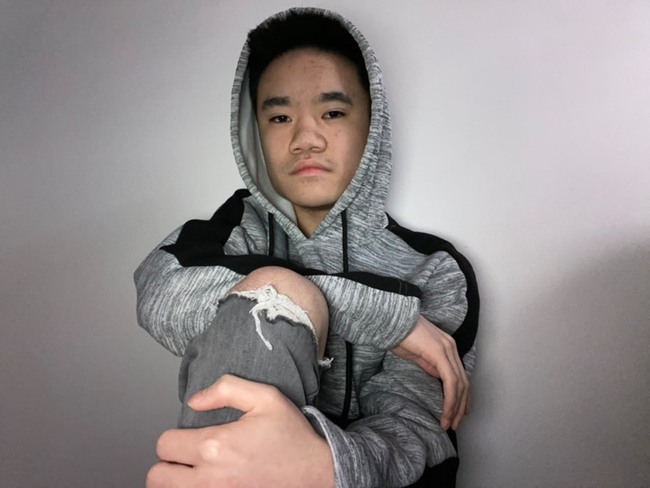

My name is Grassley Chen. I am currently a student at Brooklyn College and graduated Sunset Park High School. I have always been interested in the media aspects of the arts. Growing up watching cartoons from PBS Kids, Cartoon Network and Vortex, has brought a lot of inspiration! I've found myself endjoying shows that depicted a "darker" or more "gritty" genre. If I felt like there were really well choreographed and animated fight scenes in a piece of media, 9 times out of 10, I would be hooked to it. My favorites included Dragon Ball Z, Injustice and most Artix Games. Most of my OCs, universes and stories are deeply inspired by all the things I've seen in media. Everytime I would maladaptive daydream, it's always some kind of violent scene that includes some of my OCs.
Winter break of my Junior year in high school changed everything. I watched a show on Netflix that I have been putting off for a while due to a tight busy schedule. It was time to watch "Arcane". The amount of things I can say about this piece of art Will never end. From the animation, the voice acting, world building... but what captivated me the most, was the writing. It was perfect. The moment I finished the show, I immedietely went for a rewatch and filled up a playlist on YouTube for video essays on writing. Nothing has inspired me to this level. I think beyond the writing, a key factor that made me love the show so much, was the genre and the tropes. It was modern fantasy, dark, gritty, violent and told a story through my favorite trope. SPOILER WARNING: Pretty much all of my main OCs have some kind of story where they are abused, abaondoned or severely hurt when they were young and they come back as a menacing powerful character who has little ressentment towards others. Arcane matched my taste in media and storytelling perfectly.
Nowadays, it pains me to say that I no longer am able to create art. College has been the most traumatizing experience of my life so far. College has made me truly realize my incompetence. I've realized that I am mentally slower than all of my peers. Despite the fact that it seems like I am trying significantly harder than others, I am incapable of succeeding. I have solely been focusing on school and it feels like my passion and love for creating has dwindled due to the severe trauma and strain college has had on me. Now, I fear for my life and future as a whole, not sure if I'm capable of being happy and/or successful. I still strive to continue to try my best despite how dark my life may look. I still struggle with being "enough", but I'm also trying to learn that there is no such thing as "enough". As long as I truly give it my all and live my life in the best way I can, I might be able to truly find happiness again. Despite all of these hardships and uncertaintis, I hope to stop caring about what others think and to stop comparing myself to those who are more successful, smarter and stronger than me. I hope to achieve a new goal now: Live a life being happy, knowing I worked hard, will continue to put in effort and live on my terms, regardless of where I might end up. Oh, and also, just try to be good to people! :)
Arcane
Coraline

Cyberpunk Edgerunners

Arrow


.png)

Click here to view my profile on Scratch
Here are some of the Scratch projects I'm most proud of: